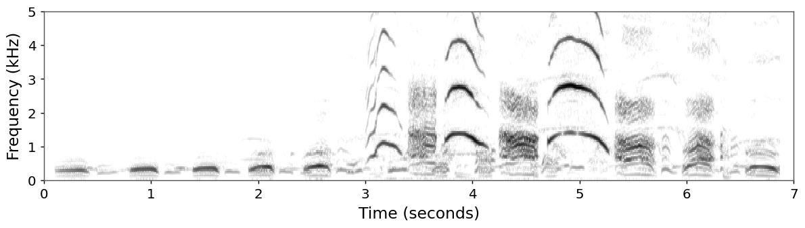
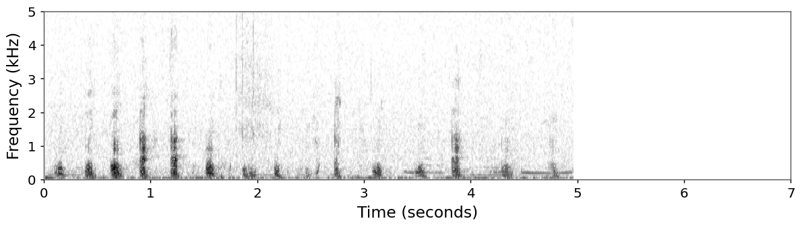
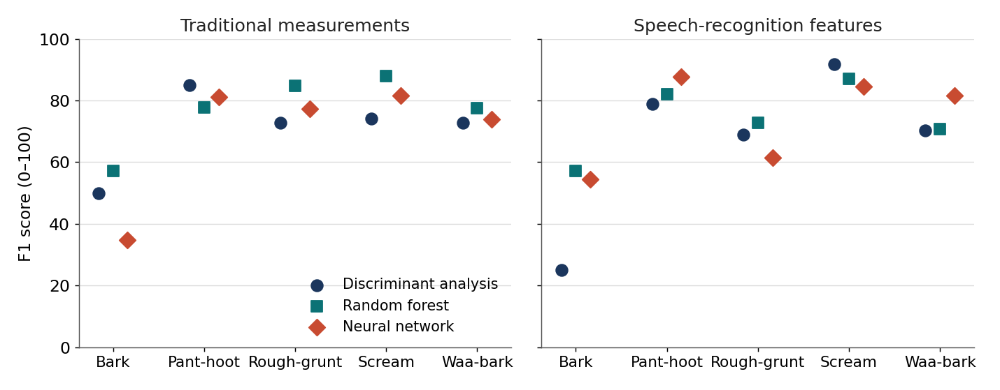
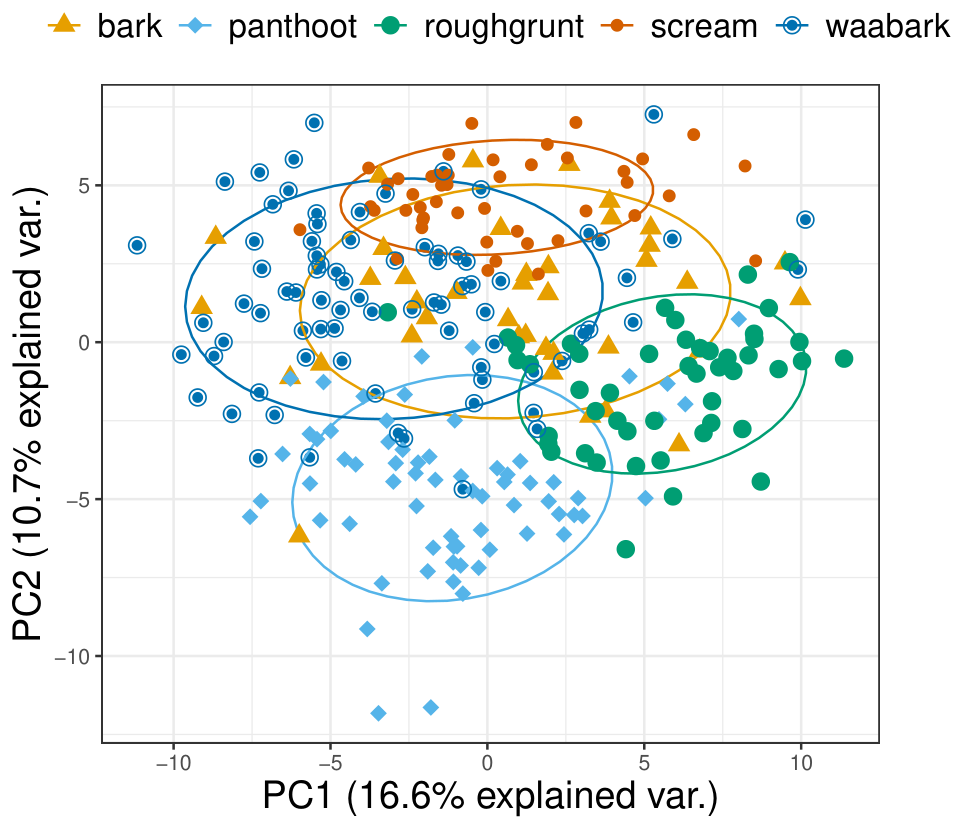

Listen first
Here are five chimpanzee calls. Play them before you read on.
Each picture is a spectrogram of the recording under it. Time runs from left to right and pitch runs upward, so a high call sits high in the picture. Darker means louder. All five are drawn to the same scale, seven seconds wide.





The pant-hoot and the rough-grunts are easy to pick out. Now try the other three. Where does a bark end and a waa-bark begin? When is a long waa-bark a short scream?
If you are not sure, you are in good company. The computer was not sure either.
These recordings are fifty years old. Hetty van de Rijt-Plooij and Frans Plooij made them at Gombe National Park, Tanzania, between 1971 and 1973, and the tapes were later digitized and released to the public. I began this study in late 2017, while my own field recordings from Gombe were still coming in, so I worked with theirs.
Why the names matter
Almost every study of chimpanzee calls begins with a name. Do pant-hoots carry a community's dialect? Do rough-grunts tell other chimpanzees what kind of food has been found? Do screams differ with how badly the caller is being attacked? Each question takes it for granted that we know what a pant-hoot, a rough-grunt or a scream is.
Where did the names come from? From people listening. In the 1960s Jane Goodall and Peter Marler described the calls of the Gombe chimpanzees by ear and by looking at spectrograms, and researchers have used their categories, with additions, ever since.
That is a sensible way to start. It also has problems.
- Listeners differ. Two people can file the same call under different names, and each will tend to hear what they expect.
- The calls blend. Many chimpanzee calls grade into one another, as you just heard. Marler said so in 1976. A name draws a line across something that may have no line in it.
- One name can hide several calls. Researchers still argue about what rough-grunts mean, and part of the trouble may be that several different calls are being lumped together as “rough-grunts.”
I had a practical reason to care as well. I wanted to test whether chimpanzee communities have dialects, and I knew my samples would be small. With small samples, the way you measure a call can decide the answer. So before measuring anything that mattered, I wanted to know which tools to trust.
Two ways to measure a call
A computer cannot sort sounds. It sorts numbers. So the first decision is which numbers to take from each call, and there were two schools of thought.
The field's own measurements. Primatologists mostly measure pitch. How high is the call? How does the pitch rise and fall? At what frequency is the call loudest, and how long does it last? The standard tool is a program called LMA, written by Kurt Hammerschmidt at the German Primate Center in Göttingen. In March 2020 I visited his lab, and he taught me to use it. It gave me 90 measurements for each call.
Measurements borrowed from speech recognition. The software that turns your voice into text does not measure pitch that way. It uses numbers with an unfriendly name, mel-frequency cepstral coefficients, built on a simple idea: measure sound the way an ear hears it.
Ears do not treat all frequencies alike. We hear some better than others, and a step of 100 hertz that is obvious in a low sound is much harder to notice in a high one. These features stretch and squeeze the frequency scale to match, then describe the overall shape of the sound. An open-source Python library, pyAudioAnalysis, gave me 136 such numbers for each call.
Why might they suit chimpanzee calls? Because a call evolved to be heard by another chimpanzee, not to be measured by a primatologist. Features built around hearing might capture what matters to the listener. They are built around human hearing, which is only a rough stand-in for a chimpanzee's, but it is a start. They had worked for frogs, birds and elephants. Nobody had used them to sort chimpanzee calls into types.
Two kinds of test
I went through the archive and pulled out calls of five types, 281 in all. I chose those five because I could recognize them with confidence, and I threw out poor recordings and choruses where several chimpanzees called at once. Then I ran two kinds of test.
With the names. Show the computer 70% of the calls along with their names, let it learn, and then ask it to name the other 30%, which it has never heard. I tried three methods:
- Discriminant function analysis, which primatologists have used for decades.
- A random forest, which builds hundreds of small decision trees and lets them vote.
- A neural network, and a very small one, with a single hidden layer. With 281 calls there was not enough data for anything deeper.
Without the names. Give the computer the measurements and nothing else, and ask what groups it finds on its own. Does it rediscover our five types? I used two standard methods for this, k-means clustering and principal components analysis.
I was teaching myself machine learning at the time, partly from Jeff Leek's online course, and the analysis uses the R toolkit that course teaches. An early version, with speech-recognition features only, became a talk at the Acoustical Society of America's meeting in May 2018. One of my slides asked the acousticians in the room for feedback.
What happened
How do you score a sorting machine? Take pant-hoots. Of the calls I had labeled as pant-hoots, how many did the computer find? And of the calls the computer called pant-hoots, how many had I labeled that way? A good method does well on both. The F1 score combines the two into one number from 0 to 100.

Three things stand out.
Nothing won. The best pairing was a random forest on the traditional measurements, which named 78% of the test calls correctly. The neural network on speech-recognition features got 77%. The worst pairing got 71%. With only 82 calls in the test set, each of those figures is uncertain by about ten points either way, so the differences between them mean very little. Roughly three calls in four, whatever I did.
Pant-hoots and screams were easy. Every method scored between 74 and 92 on them.
Barks were hard. No method scored above 57 on barks, and one scored 25. Barks, waa-barks and screams blend into one another, and the computer tripped over the same blend a human listener does.
So the speech-recognition features were not the improvement I was looking for. At their best they were a little ahead on pant-hoots, screams and waa-barks, and clearly behind on rough-grunts. Overall it was a draw.
Without the names
Would the computer find five types if nobody told it there were five? It did not. With either set of measurements, the natural number of groups was three.
Pant-hoots separated most cleanly. Barks never got a group of their own, at three groups or at five. They were scattered among the screams, the waa-barks and the rough-grunts.


This is where the speech-recognition features did better. In the pictures above, they separate the call types more cleanly than the traditional measurements do, even though nobody told the method which call was which. It was not a clean sweep. When I forced the clustering method to make exactly five groups, the groups matched my five names a little better with the traditional measurements (69% of calls against 64%).
They also turned up something I had not asked about. When I allowed six or seven groups, the rough-grunts split into two groups of their own. That fits what other researchers had suspected from listening: “rough-grunt” may be more than one call.
What I decided
I had gone looking for a better tool, and I found one that was about as good. For pant-hoots, the call I cared most about, the old method scored 85 and the best new one scored 88.
That was not enough to switch. Earlier studies of chimpanzee dialects had used the traditional measurements and discriminant function analysis. If I used the same tools and got a different answer, the difference could not be blamed on the tools. So for the dialect study I used the old ones.
It is not an exciting conclusion. But it is why, when the dialect study later disagreed with earlier ones, nobody could say I had simply measured the calls differently.
What this does not show
- The answer key was me. The computer was graded against names that people gave the calls. When it disagrees with me about a bark, I cannot say which of us is wrong. Only the chimpanzees can, and asking them means playback experiments in the forest.
- I picked the easy cases. The archive's authors describe 39 call types. I used the five I was surest of, and only clear recordings. The real problem is harder than the one I tested.
- It is a small sample from one place. There are 281 calls here, from one population, on tapes from the early 1970s.
- I averaged each call over time. Every feature was averaged across the whole call, which throws away the order of events. For a pant-hoot, the order is most of the point.
- The neural network was tiny. One hidden layer says little about what deep networks can do with a large dataset.
This chapter was never published as a paper. It is Chapter 1 of my dissertation.
What I would do now
Reading the chapter today, I notice how much effort went into choosing the numbers. Ninety hand-designed measurements against 136 others. The field of machine learning has mostly stopped doing that. You hand a deep network the spectrogram itself and let it work out what to measure, provided you have enough examples.
That is what I did a few years later. For infant macaque calls at Emory I built a detector that reads spectrograms directly and finds and names the calls in a recording. It had thousands of labeled calls to learn from, not 281. And its spectrograms use the same ear-shaped frequency scale I first met here.
The harder question has not changed. Computers keep getting better at sorting calls into our categories. Whether those are the chimpanzees' categories is still something only the chimpanzees can tell us.
Read more. Chapter 1 of my Ph.D. dissertation (University of Minnesota, 2022), “A comparison of quantitative classification techniques for studying chimpanzee vocalizations.” An early version was presented as Desai, Lehman, Munson and Wilson, “Supervised and unsupervised machine learning techniques for classifying chimpanzee vocalizations,” Acoustical Society of America, May 2018.
With Michael Wilson (advisor), Clarence Lehman and Benjamin Munson. Thanks to Kurt Hammerschmidt for teaching me LMA, and to Matthew Winn and Mark Bee.
The recordings are from Plooij, van de Rijt-Plooij, Fischer, Wilson and Pusey (2015), “An archive of longitudinal recordings of the vocalizations of adult Gombe chimpanzees,” Scientific Data 2:150027, archived at the Macaulay Library and on Dryad (public domain). The five clips are the examples I used in my talks, cut from the archive's longer recordings. I drew the spectrograms and the score chart for this page; the two scatter plots are Figures 6 and 7 of the dissertation.